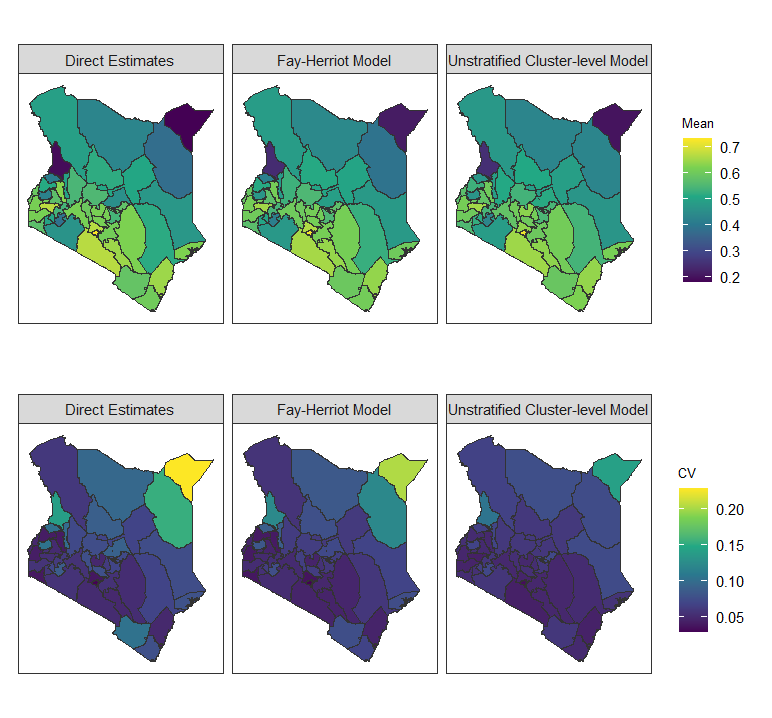
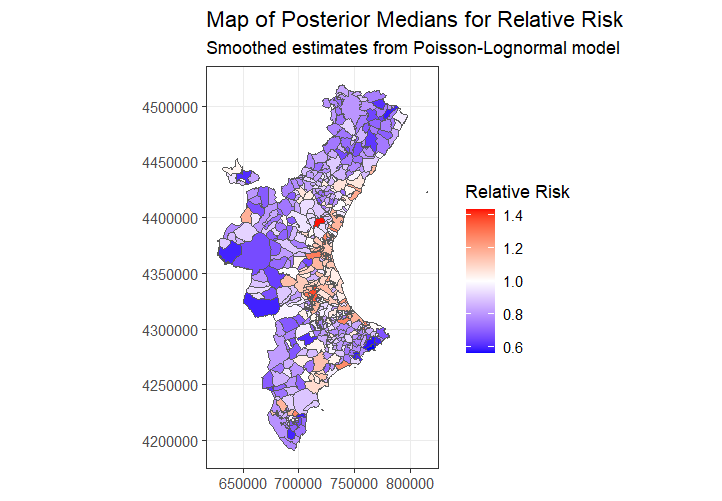
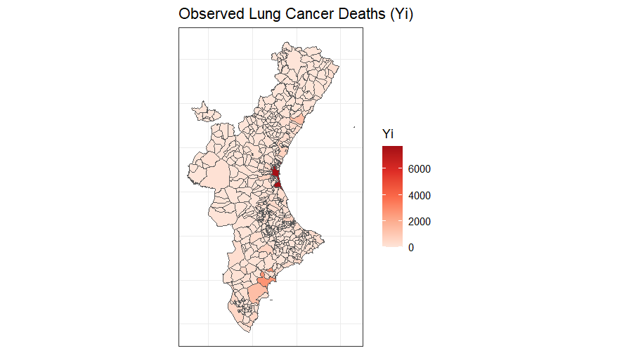
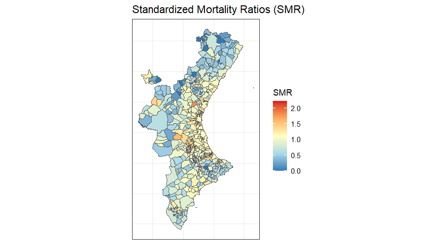
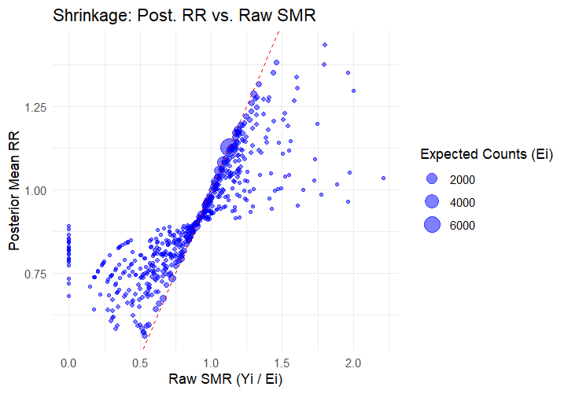
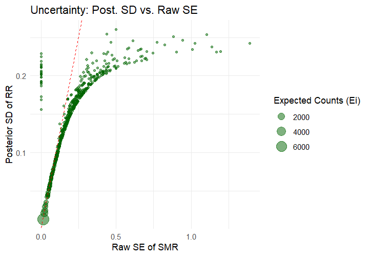

Biostatistician with a strong foundation on statistical inference, focused on model selection, target parameter estimation and statistical methods in spatial epidemiology for public health applications.
I am trained in statistical inference and advanced biostatical methods with a strong emphasis on selecting appropriate models based on the research question and target parameter, hypothesis testing. Besides teaching statistics/biostatistics my work also focuses on applying rigorous statistical thinking to real world health data including spatial disease mapping, Small Area Estimation(SAE) and survey sampling
I am broadly interested in Biostatistics, Data science, statistical inference and spatial epidemiology with focus on applying advanced statistical methods to public health data and disease surveillance.
For more information about me, please check out my Resume, or reach out via email or linkedin.
kevsim98@uw.edu
kevinmukubwa61@gmail.com
Biostatistics Master's Student
University of Washington
Department of Statistics/Biostatistics
University of Nairobi
Faculty of Health Sciences
University of Nairobi
Conducted a comparative analysis of small area estimation models, including spatial Fay-Harriot, ustratified cluster level, stratified cluster level and bayesian approaches to estimate antenatal care (ANC 4+) coverage across subnational regions in kenya.
The analysis focused on improving precision of estimates in areas with limited survey data, incorporating spatial structure to capture geographic variation and identify disparities in coverage
Key Methods: Small Area Estimation, Spatial modelling, Bayesian inference (INLA)

Disease mapping for lung cancer mortality data for men in Valencia region of Spain from 1991-2000
The main focus was risk estimation. Standardized Mortality Ratios(SMR) compare observed deaths to expected deaths in each area. Relative Risk(RR) mapping using bayesian spatial models( Besag-York-Mollie) to estimate smoothed RR to account for small population areas where raw rates fluctuate wildly.
Uncertainty mapping; Posterior SD for the mean RR and SE for the SMR to assess confidence in the RR and SMR estimates. Helps distinguish real hotspots from random fluctuations
Key Methods:Disease Mapping, Relative Risk and SMR, Bayesian spatial modelling, Spatial data visualization




